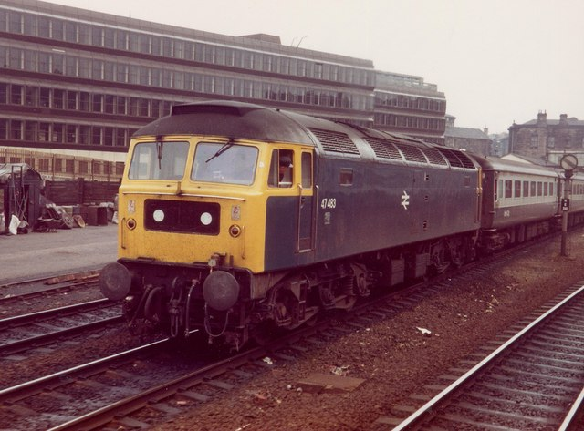
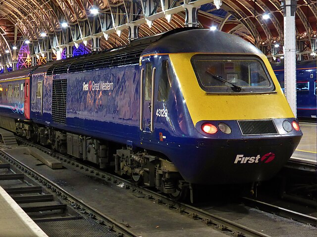
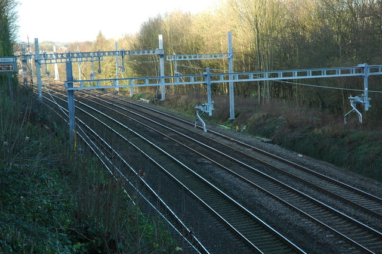
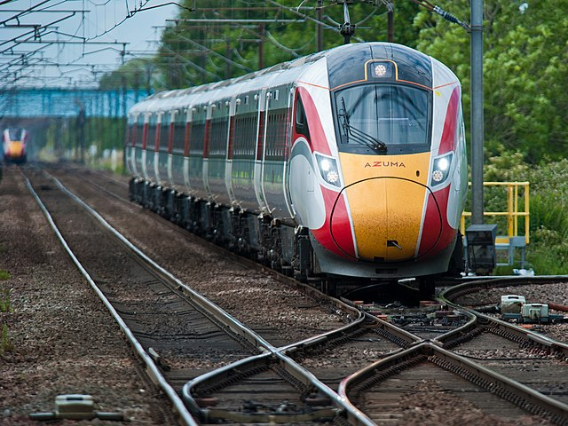

This timeline highlights significant introductions of British mainline routes, key events and notable locomotives throughout history.
This railway, opened in 1825, was the world's first public railway to use steam locomotives.
Photo: Terence Cuneo/Science Museum
In 1948, the railways were nationalised and brought under the control of British Railways.
Photo: kitmasterbloke
In the 1960s, British Railways began a programme of modernisation, introducing new diesel and electric trains.
Photos: Rob Newman and michaelday_bath
The InterCity 125, introduced in 1976, was the world's fastest diesel train and revolutionised long-distance travel in the UK.
Photo: train_photos
High-Speed 1 (HS1) is the UK's first high-speed rail line which opened in 2007, connecting London with the Channel Tunnel.
Photo: Cnbrb
In 2010, major electrification projects were undertaken to improve the rail networks such as the Great Western Main Line and the Midland Main Line.
Photo: Andrew Bodman
The Class 800/801 Azuma trains, introduced in 2017, are part of the Hitachi A-train family and operate on the East Coast Main Line.
Photo: The joy of all things